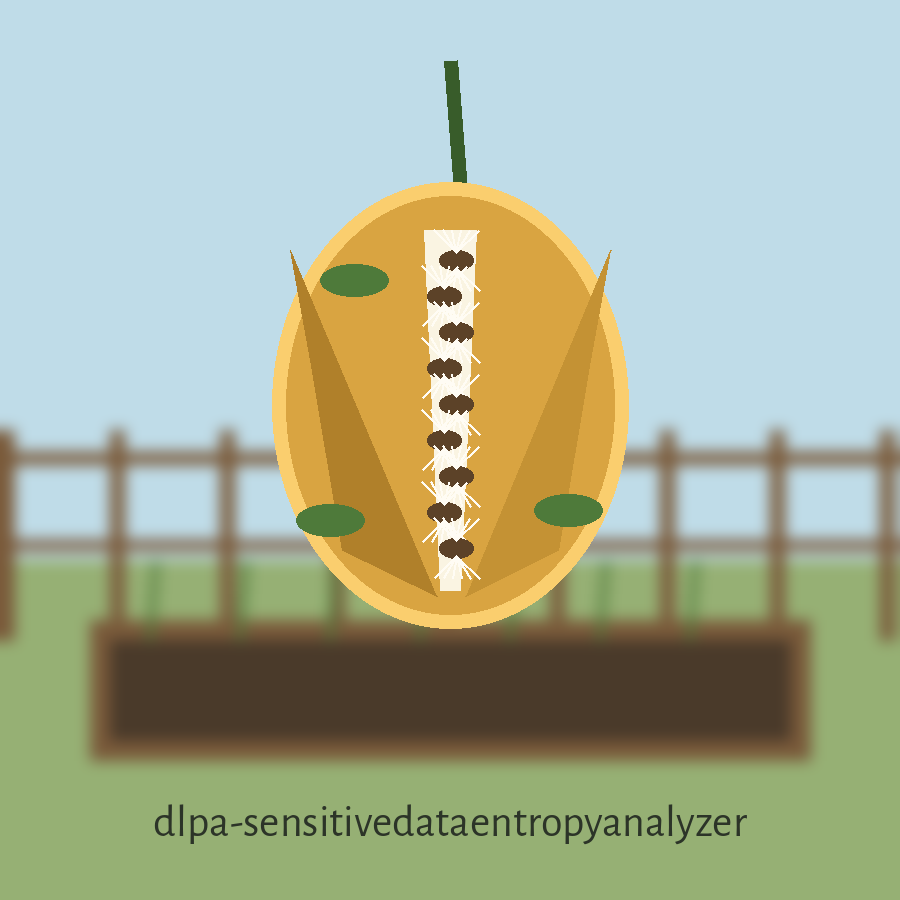
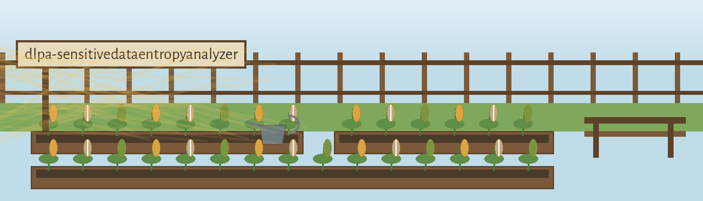

dlpa-sensitivedataentropyanalyzer: Monarch Waystations of the Schoolyards


One Number per File
Above the Line Means Flagged
Nothing Is Written but the Log
The Second Job Sows Records
Two Exits Worth Knowing
First row: the double job
This program has two jobs. In its analysing mode it scores a file, or the files in a directory, with one entropy number each, and calls a file possibly sensitive when that number runs high. In its generating mode it writes batches of invented sensitive records to text files, so that leakage prevention rules can be tested against material nobody owns. Both halves belong in any full account of this tool.
Second row: the score
The file is read whole, as bytes, into memory. Entropy is counted over those bytes with the Shannon formula, one number for the entire file. A file is flagged only when its number is strictly above the threshold, never at it. The default threshold is 4.5. There is no search inside the file, no keyword list, and no pattern set in this mode. Correction: the README opening also speaks of structured formats; the code checks none, and this site drops that phrase.
Third row: directories
Without the recursive switch, only files sitting directly in the named directory are scored; subfolders are passed by. With it, the walk descends through every subfolder in turn. A file that cannot be read is logged as an error and the walk continues past it.
Fourth row: the needs
Python 3, and one package: Faker, at 20.5.0 or later, named alone in the requirements file. Faker is imported at the very top of main.py, so the analysing mode and even the help text depend on a data generation library being installed first. A machine without it stops at the import line.
Fifth row: install
The install line stands exactly as it stands in the README: git clone https://github.com/ShadowGuard-AI/dlpa-sensitivedataentropyanalyzer. It is already correct. It names ShadowGuard-AI with its hyphen. No correction note attaches to it.
Sixth row: the controls, in parser order
Path first: positional, optional only because generate mode needs none. Threshold next, short and long forms, a number defaulting to 4.5. Recursive next, a switch. Verbose next, a switch that drops the logging to debug level, where each scored file shows its number. Generate next, a switch choosing the second mode. Num files next, a whole number defaulting to 10, used only in generate mode. Output dir last, defaulting to a folder named fake_data.
Seventh row: a result, honestly
A flag is a warning line in the log and nothing more. No report file is written in either mode. No summary count is printed. The run exits 0 whether a file was flagged or not, whichever mode ran, so a calling script cannot learn the answer from the exit code and must read the log. The README says none of this; this site does.
Eighth row: the endings that do exist
An analysis run with no path at all is refused with exit 2. A path that is neither an existing file nor a directory is refused with exit 1. A generate run asking for fewer than one file is refused with exit 1 before anything is written.
Ninth row: the generating mode, as fact
The program creates the output folder if it is missing, then writes sequentially numbered text files, each holding ten labelled lines of invented record: a name line, an address, a card number, a social security number, an email address, a phone number, a company, an internet protocol address, a date of birth, and a licence plate line. Those fields are described here and no value for any of them is printed on this site or in the README. The values exist only inside files the program itself generates at run time.
Last row: licence, in two parts
This project is released under the MIT License. See the LICENSE file for details. That sentence is printed as it stands in the README. Beside it, a separate recorded fact: the LICENSE file does carry the MIT License, and its holder line gives a pen name first, a parenthetical given name with a single initial after it, and a handle last. That initial stays unexpanded on this site.
Notes on limits the README understates
Whole file scoring is blind to position and proportion: a short secret inside a long plain file barely moves the single number, while a small compressed or encoded file scores high from end to end. Every analysed file is read entire into memory, so very large files cost their full size in RAM. Analysis errors are logged and absorbed, and the run still ends at 0. One stale note elsewhere in the repo is recorded as found: the Visuals roadmap asserts there is no licence file, although LICENSE is present at the root and the README licence sentence correctly points to it.
The preserved README record
 # dlpa-SensitiveDataEntropyAnalyzer Calculates the entropy of files and directories to identify potential sensitive data based on high randomness and structured formats, bypassing reliance on predefined keywords or patterns. Flags files exceeding an entropy threshold for further investigation. - Focused on Tools for assessing the effectiveness of data leakage prevention (DLP) measures. This involves generating realistic but fake sensitive data (e.g., credit card numbers, names, addresses) using Faker and then testing how well DLP systems detect and prevent the exfiltration of this data. Focus on validating DLP rules rather than building a full DLP system. Note: generate mode (-g) needs no path argument. An analysis run without a path is an error. ## Install `git clone https://github.com/ShadowGuard-AI/dlpa-sensitivedataentropyanalyzer` ## Usage `python3 main.py [path] [options]` ## Parameters - `path`: Path to the file or directory to analyze. Not required in generate mode (`-g`). - `-h`: Show help message and exit - `-t`, `--threshold`: Entropy threshold. Files exceeding this value will be flagged. Default: 4.5 - `-r`, `--recursive`: Recursively analyze directories. - `-v`, `--verbose`: Enable verbose output (debug logging). - `-g`, `--generate`: Generate fake sensitive data for DLP testing. - `-n`, `--num-files`: Number of files to generate when using -g. Default: 10 - `-d`, `--output-dir`: Output directory for generated files. Default: fake_data ## License This project is released under the MIT License. See the [LICENSE](LICENSE) file for details.